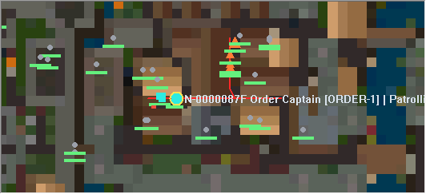

Console and script diagnostics
Coloured output, text and severity filters, command history, script diagnostics and reload reports.
WINDOWS X64 / DEVELOPMENT PREVIEW
Start a fresh SphereX world with a coloured console, an administration map and character tracking. Inspect NPC routes and manage your own server from one window.
16 October 2026 public rebuild · 8 October code snapshot · Unsigned Nightly preview

2026.10.16-PREVIEW
The Windows ZIP includes the custom executable, runtime libraries, first-run setup, official Scripts-X scripts and empty account and world files. Bring your own compatible Ultima Online client data.
Checksums · Complete setup and command guide · Release notes · Build and source details · Licences and notices
Use a new folder for this preview. It supplies a fresh stock script library and blank world, rather than an upgrade for an existing shard. Game data, player accounts and UO:PvE content are not included.
FIRST RUN
127.0.0.1 and the port you chose; the setup default is 2593.First-run setup creates your account locally. There is no shared default password. Repeating setup retains an existing account and configuration. Review client encryption compatibility in the complete guide.
WHAT THE CUSTOM BUILD ADDS
Coloured output, text and severity filters, command history, script diagnostics and reload reports.
Facet selection, search, area reports, NPC and player markers, sleeping-sector shading and available native or managed route overlays. Offline positions show the last saved location.
Permission-checked character information, teleport and jail controls, managed walking journeys, activity recording and account searches.
The 8 October source includes the UTF-8 empty-line reader correction and the guard for disabled facets. This public rebuild removes local compiler paths without changing gameplay source.
TESTED SCOPE
The clean public build passed the existing console-tools suite, isolated blank-world startup, first Owner setup and login, saving and a saved-world restart. The package was checked for matching source, empty accounts and saves, archive integrity and private paths.
This preview is unsigned and based on a Nightly server. The earlier audit still identifies small-window layout and Pause problems, expensive searches and remaining activity-recording and native pathfinding work. No GUI or performance repairs are claimed for this release.
There is no new production-load, multiplayer-gameplay or receiving-system validation for this public rebuild. Benchmark results for older executables do not establish the capacity of this package. The supplied stock scripts do not install the optional faction-patrol demonstrations found in the source examples.
Read the complete guide → · Original SphereServer X project ↗